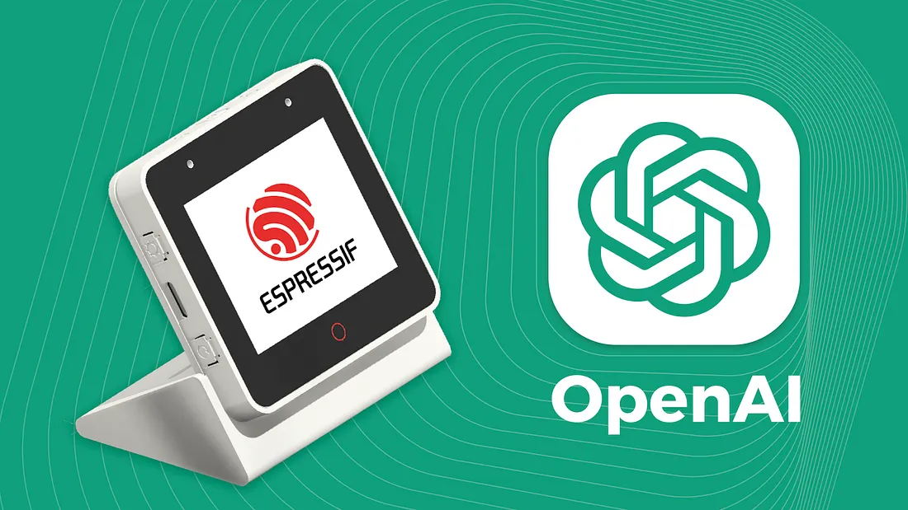

ESP-BOX AI Assistant
A voice-first ChatGPT integration for Espressif's ESP-BOX platform, featuring real-time AI conversations on embedded hardware. Complete with OpenAI API component, speech processing, and intuitive touch interface.
Project Overview
This project presents a comprehensive voice-first ChatGPT integration for Espressif's ESP-BOX development platform, showcasing the convergence of AI and embedded systems. It delivers a fully functional OpenAI API component for ESP-IDF, enabling seamless integration of modern AI capabilities into resource-constrained embedded hardware.
The solution supports real-time voice interactions, streaming responses, and an intuitive touch-based UI, bridging the gap between cloud-based AI services and edge computing platforms. I designed and implemented the project end-to-end: developing the ESP-IDF OpenAI API component, building the audio pipeline (speech-to-text and text-to-speech), and creating a polished demo with an interactive LCD interface.
The component abstracts complexities such as HTTPS calls, authentication, streaming, and parsing, making it reusable and developer-friendly. Beyond serving as a practical demonstration, it provides a framework for IoT developers to incorporate AI-powered conversational experiences into their devices.
View demo on GitHubMy Key Contributions
Cleanly abstracts authentication, HTTPS, streaming responses and JSON parsing so embedded apps can call OpenAI with minimal code.
Integrated microphone/speaker, speech-to-text, ChatGPT conversation flow, and text-to-speech with LCD feedback — a complete reference for AIoT demos.
Reduced memory footprint (~25%) via streaming JSON parsing, buffer reuse, and optimized audio buffering to suit ESP32-S3 constraints.
Designed and implemented an intuitive touch-based interface using LVGL graphics library, featuring responsive layouts, real-time conversation display, and visual feedback elements that enhance user interaction with the AI assistant.
Authored step-by-step guides and examples that helped widespread adoption across the ESP32 community; wrote two deep-dive Medium articles.
Implementation & Highlights
How it works (high level)
- Audio captured on device → speech-to-text (local/offload) → request to OpenAI via secure HTTPS → stream response parsed progressively → text-to-speech and LCD shown incrementally.
- Multi-task design using FreeRTOS: separate tasks for audio I/O, network I/O, and UI to keep the UI responsive while network calls stream data.
- TLS via MbedTLS for secure connections and careful token handling to avoid leaks on constrained devices.
- Streaming JSON parsing and incremental UI updates to avoid large memory allocations when responses are lengthy.
- Graceful degradation: offline prompts, retry/backoff policy, and clear UX when network connectivity is poor.
Notable engineering decisions
- Stream parser over full-buffer JSON to shrink peak memory.
- Prioritized deterministic latency for audio tasks; network tasks are scheduled with lower priority.
- Component API design focuses on minimal surface area — init, sendRequestStream, onChunk, onError — for easy reuse.
For a full technical deep-dive, see the articles linked below (design patterns, code snippets, and performance measurements).
Technologies & Languages
Programming Languages
Frameworks & Platforms